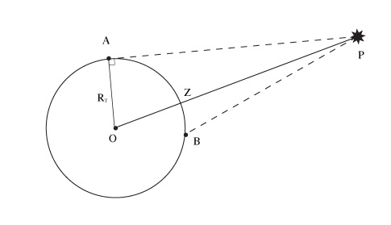
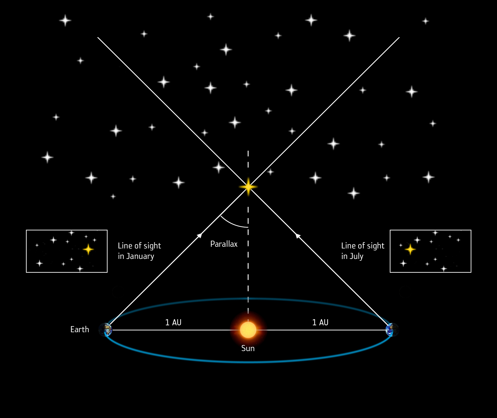

Вимірювання відстаней в астрономії#
Астрономічна одиниця (а.о.)#
Астрономічна одиниця (astronomical unit, AU) - це середня відстань між Землею та Сонцем. Вона дорівнює 149 597 870 700 метрів або приблизно 149.5 млн км (мільйонів кілометрів).
Ця одиниця вимірювання особливо зручна для опису відстаней у межах Сонячної системи. Наприклад:
Середня відстань між Землею та Місяцем 0.0026 ± 0.0001 а. о.
Середня відстань між Марсом і Сонцем 1.52 ± 0.14 а. о.
Середня відстань між Юпітером та Сонцем 5.20 ± 0.05 а. о.
Астрономічну одиницю здебільшого застосовують для вимірювання відстаней між об'єктами Сонячної системи, а також між компонентами подвійних зір. Світло долає цю відстань за 8 хвилин і 19,8718281653569 секунд.
# Astronomical unit in meters
AU = 149_597_870_700
# Distance from Earth to Moon is 0.0026 AU
distance_1 = 0.0026 * AU
# Distance from Sun to Mars is 1.52 AU
distance_2 = 1.52 * AU
# Distance from Sun to Jupiter is 5.2 AU
distance_3 = 5.2 * AU
print(f"Distance from Earth to Moon is {distance_1:,.2f} meters")
print(f"Distance from Sun to Mars is {distance_2:,.2f} meters")
print(f"Distance from Sun to Jupiter is {distance_3:,.2f} meters")
Distance from Earth to Moon is 388,954,463.82 meters
Distance from Sun to Mars is 227,388,763,464.00 meters
Distance from Sun to Jupiter is 777,908,927,640.00 meters
Світловий рік (св. р.)#
Світловий рік - це відстань, яку світло проходить за один рік, рухаючись у вакуумі зі швидкістю \(c = 299 792 458\) м/с. Згідно з рекомендаціями Міжнародного астрономічного союзу як чисельне значення року, якщо не вказано інше, застосовується юліанський рік, що становить 365.25 діб або 31 557 600 секунд (365.25×24×60×60). Світловий рік становить 9 460 730 472 580 800 м ≈ \(9.46 \cdot 10^{15}\) м.
Світловий рік, очевидно, більший за астрономічну одиницю. 1 св. рік (світловий рік) становить 63240.18 а.о. (астрономічних одициць)
Перевіримо вищевказані значення за допомогою Python:
speed_of_light = 299_792_458 # meters per second
number_of_days_in_a_year = 365.25 # days
time = number_of_days_in_a_year * 24 * 60 * 60 # seconds
print(f"Number of seconds in a year is {time:.0f}")
light_year_in_meters = speed_of_light * time # meters
print(f"Distance light travels in a year is {light_year_in_meters:,.2f} meters")
light_year_in_AU = light_year_in_meters / AU # AU
print(f"Distance light travels in a year is {light_year_in_AU:,.2f} astronomical units")
Number of seconds in a year is 31557600
Distance light travels in a year is 9,460,730,472,580,800.00 meters
Distance light travels in a year is 63,241.08 astronomical units
Парсек (пк)#
Парсек (назва є скороченням від паралакс-секунда, англійською parallax second) - це відстань, з якої середній радіус земної орбіти (рівний 1 а.о.), перпендикулярний до променя зору, видно під кутом 1'' (одна кутова секунда).

Рис. 1. Означення парсека
Спробуємо тепер порахувати, яке значення має 1 парсек.
За означенням, тангенс кута прямокутного трикутника дорівнює відношенню протилежного катета до прилеглого катета. Таким чином, з вищевказаного рисунку 1 маємо:
Для кутів, що виражаються у радіанах, справедливе наступне наближення (хоча вам це наближення може здаватись чимось новим і незрозумілим, однак це наближчення дуже часто застосовується у фізиці для спрощення багатьох виведень та запису формул):
Одна кутова секунда в радіанах:
Як результат
Підставимо отримане значення у рівняння:
Тепер виразимо значення парсека:
Підставимо значення астрономічної одиниці в метрах:
Щоб отримати значення парсека у світлових роках, поділимо отримане значення на довжину світлового року:
Таким чином, ми отримали всі основні співвідношення для парсека:
1 пк = 206264.806 а.о.
1 пк = \(3.0856 \cdot 10^{16}\) м
1 пк = 3.2618 св. р.
import math
arcsec_in_radians = 1/3600 * math.pi / 180 # radians
print(f"1 кутова секунда в радіанах: {arcsec_in_radians:.6e}")
1 кутова секунда в радіанах: 4.848137e-06
Примітка: значення "4.848137e-06" - це так звана експоненційна нотація, з якою ви можете часто зустрічатись в програмуванні або коли ви працюєте із розрахунками таблиць Excel. По суті, це значення означає \(4.848137 \cdot 10^{-6}\) у науковій нотації, до якої ми більше звикли.
parsec_in_astronomical_units = 1 / arcsec_in_radians # parsecs
print(f"1 парсек дорівнює {parsec_in_astronomical_units:.3f} а.о.")
1 парсек дорівнює 206264.806 а.о.
# Астрономічна одиниця в метрах
AU = 149_597_870_700
parsec_in_meters = parsec_in_astronomical_units * AU # meters
print(f"1 парсек дорівнює {parsec_in_meters:,.2f} метрів")
print(f"1 парсек дорівнює {parsec_in_meters:,.10e} метрів (записано в експоненціальній формі)")
1 парсек дорівнює 30,856,775,814,913,672.00 метрів
1 парсек дорівнює 3.0856775815e+16 метрів (записано в експоненціальній формі)
parsec_in_light_years = parsec_in_meters / light_year_in_meters # light years
print(f"1 парсек дорівнює {parsec_in_light_years:.4f} світлових років")
1 парсек дорівнює 3.2616 світлових років
Паралакс в астрономії#
Паралакс - це видиме зміщення або різниця у видимому положенні об'єкта при спостереженні з двох різних ліній зору. Що менша відстань до об'єкта або що більша відстань між точками спостереження (базис), то більший паралакс. Паралакс вимірюється кутом або напівкутом нахилу між цими двома лініями. Завдяки ракурсу найближчі об’єкти демонструють більший паралакс, ніж дальні об’єкти, тому паралакс можна використовувати для визначення відстані (особливо на фоні дуже далеких зір). Залежно від того чи беремо ми кут чи напівкут у якості паралаксу, формули для визначення відстані до об'єкта будуть відрізнятися позначеннями/параметрами (але загальний вигляд формули буде ідентичним для обох випадків). У астрономії паралакс зазвичай беруть у якості напівкута нахилу між двома лініями зору.
Це явище можна легко помітити в повсякденному житті: якщо по черзі дивитися на який-небудь предмет то лівим, то правим оком, то він буде здаватися зміщеним відносно більш віддалених предметів. Що далі розташований об'єкт, то менше змінюється його візуальна позиція.

Рис. 2. Ілюстрація паралаксу. При зміщенні суб'єкта, візуально зміщуються об'єкт/об'єкти. Автор: Nathaniel Domek, CC BY 3.0, Посилання
Явище паралаксу широко використовується в природі. Майже всі ссавці й птахи мають хоча б вузьку зону бінокулярного зору. Це дає їм можливість вимірювати відстань до об'єктів у полі зору. Висока бінокулярність зору характерна для тварин, яким важливо точно визначати відстані. Наприклад у людей цей кут становить до 150°. Відповідно, два ока дають два трохи різні зображення, які майже повністю перекриваються. Мозок, аналізуючи дані з двох точок спостереження, будує об'ємне зображення.

Рис. 3. P - паралакс; a, b - точки спостереження; А, В - положення спостережуваного об'єкта O на фоні. Автор: Thaisk - Власна робота, CC BY-SA 3.0, Посилання

Рис. 4. Означення парсека через паралакс (паралакс на цьому рисунку становить одна кутова секунда 1'', що відповідає означенню парсека, яке ви бачили вище). Public Domain, Link
Добовий паралакс та горизонтальний паралакс#
Добовий паралакс - це кут між напрямком на небесне тіло з центра Землі і напрямком на небесне тіло з якої-небудь точки на поверхні Землі. Очевидно, що добовий паралакс може змінюватися залежно від часу (точніше, обертання Землі) та точки спостереження на поверхні Землі. Добовий паралакс раніше використовувався для визначення відстаней до об'єктів в Сонячній системі, однак зараз цей метод витіснений більш точними методами.
Горизонтальний паралакс - це максимальне значення добового паралаксу, яке спостерігається, коли небесне тіло знаходиться на горизонті.

Рис. 5. Добовий \(\angle BPO\) та горизонтальний паралакс \(\angle APO\)
Відстані до небесних тіл в Сонячній системі зазвичай обчислюються за допомогою їх горизонтальних паралаксів.
Нехай \(L\) - відстань до небесного тіла від центру Землі, а \(R_0\) - радіус Землі. Радіус Землі дорівнює 6378 км. Позначимо горизонтальний паралакс (це кут \(\angle APO\) на Рис. 5) символом \(p_0\).
Тоді за означенням синуса кута прямокутного трикутника із Рис. 5 маємо:
Звідси
\[L = \frac{R_0}{\sin p_0}\]
Оскільки паралакси \(p_0\) дуже малі для усіх небесних тіл, окрім Місяця, то це дозволяє замість синусів кутів брати значення самих кутів, але потрібно, щоб кути були виражені в радіанах. Тобто для дуже малих кутів, що виражені в радіанах, справджується наступне наближення (це наближення дуже часто використовується у фізиці, тому рекомендую його запам'ятати):
Як результат, маємо:
\[L = \frac{R_0}{p_0}\]
де \(p_0\) виражений в радіанах.
Отримаємо також формулу для випадку, коли \(p_0\) виражається в кутових секундах як \(p_0''\), а не в радіанах.
Одна кутова секунда в радіанах:
Звідси \(p_0''\) кутових секунд в радіанах дорівнює
Примітка: вищевказаний вираз має зміст лише, коли ми використовуємо розмірності (зліва у нас розмірність в кутових секундах, а справа розмірність в радіанах). Тепер, ми можемо повернутись до позначення \(p_0\) паралакса в радіанах:
Як результат, маємо:
\[L = \frac{206265 \cdot R_0}{p_0''}\]
де \(p_0''\) виражений у кутових секундах.
Річний паралакс#
Річний (геліоцентричний) паралакс \(p\) - це кут, під яким із зорі видно велику піввісь земної орбіти (1 а.о.), перпендикулярну до променя зору.

Рис. 6. Річний паралакс. Public Domain, Посилання на рисунок

Рис. 7. Вимірювання зоряних відстаней за допомогою паралакса. Credit: ©ESA/ATG medialab. Source
Важливі характеристики річного паралаксу:
Чим більша відстань до зорі, тим менший її річний паралакс
Річний паралакс завжди менший за \(1''\) для всіх зір (навіть для найближчої зоряної системи α Центавра \(\pi = 0.75''\))
Кут річного паралаксу є основою для визначення відстаней до зір у парсеках
Завдяки річному паралаксу визначають відстані до небесних тіл від Сонця, а не від Землі. Формула виводиться так само, як і для горизонтального паралаксу, і, відповідно, має той же вигляд, але з іншими параметрами:
\[L = \frac{1 \text{ a.o.}}{p}\]
\[L = \frac{206265 \cdot 1 \text{ a.o.}}{p''}\]
де \(L\) - відстань від Сонця до небесного світила, \(p\) - річний паралакс, що виражений в радіанах, \(p''\) - річний паралакс, що виражений в кутових секундах.
Спостерігаючи одну й ту саму зорю з інтервалом у півроку, визначають зміщення зорі на тлі далеких "нерухомих" зір, і таким чином визначають річний паралакс, який потім використовується в розрахунках.
Зв'язок річного паралакса з парсеком#
Перетворимо вираз для відстані, що ми записали вище:
Врахуємо, що 1 пк = 206265 а.о., тому
Як результат, маємо:
\[L = \frac{1}{p''} \text{ пк} \]
де:
\(L\) - відстань від Сонця до небесного тіла у парсеках
\(p''\) - річний паралакс у кутових секундах
Це дуже зручна формула для астрономічних обчислень! Наприклад:
Якщо річний паралакс зорі 0.5″, то відстань до неї 2 пк
Якщо річний паралакс 0.1″, то відстань 10 пк
Якщо 0.01″, то 100 пк
Це одна з причин, чому парсек став такою популярною одиницею вимірювання в астрономії - він природним чином пов'язаний з методом вимірювання відстаней через річний паралакс.
Межі застосування паралактичного методу#
Метод паралаксу має свої обмеження:
Для горизонтального паралаксу - застосовується для тіл Сонячної системи
Для річного паралаксу
Наземні телескопи: можуть вимірювати паралакси до ~0.01″ (100 пк)
Космічний телескоп Hipparcos (1989-1993): до ~0.002″ (500 пк)
Космічний телескоп Gaia (запущений 2013, завершує свою місію у березні 2025 року): до ~0.00001″ (100000 пк), однак похибка на відстанях більших за 10000 пк може зростати до 20% залежно від яскравості зір
Для порівняння:
Відстань до центру нашої Галактики: близько 8000 пк
Діаметр Чумацького Шляху: близько 30000 пк
Тобто паралактичний метод дозволяє вимірювати відстані в межах нашої Галактики, але вже для найближчих галактик (наприклад, Туманність Андромеди, яка є найближчою до Чумацького Шляху великою галактикою, розташована на відстані ~772000 пк або 2.52 млн світлових років) він не дуже придатний.
Для більших відстаней астрономи використовують інші методи: цефеїди, наднові типу Ia, закон Габбла-Леметра тощо.
Радіолокаційний метод#
Для більш точного визначення відстаней у межах Сонячної системи застосовується радіолокаційний метод. Принцип методу полягає у вимірюванні часу \(t\), за який радіолокаційний імпульс досягає небесного тіла і повертається на Землю. Відстань \(L\) обчислюється за формулою:
де \(c\) - швидкість світла (≈ 3·10⁸ м/с), а \(t\) - час проходження радіосигналу до об'єкта і назад.